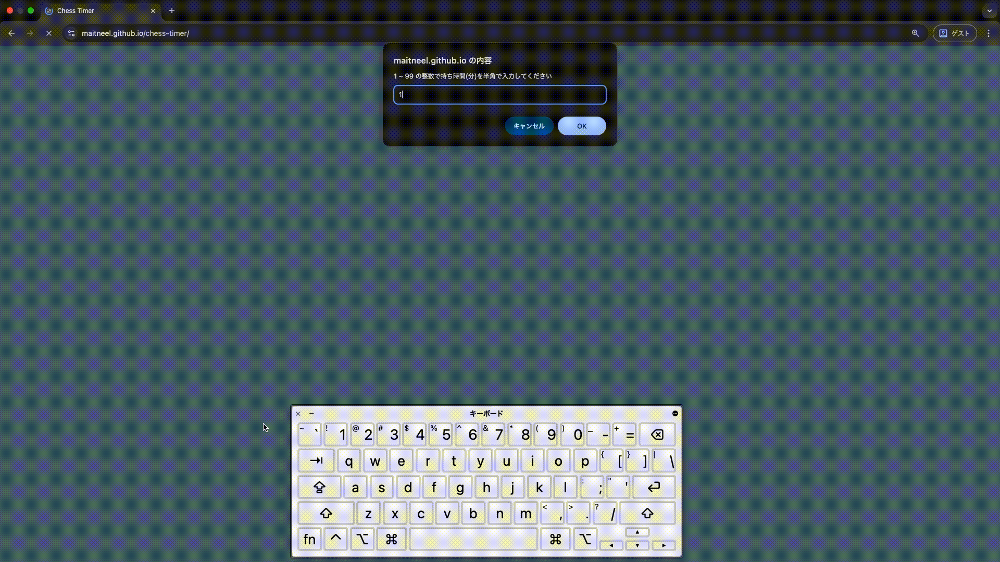

maitneel's protforio
webserv
C++で書かれたHTTPサーバー
実行時に設定ファイルを渡し、その設定に基づいたルーティングを行う。接続には socket 関数で作成した TCP ソケットを使用している。
制作時期
:
2024/07 ~ 2025/02

担当箇所
:
主にリクエストの解析、CGIの呼び出しを担当。eventの通知、event-loopについては共同製作者のndmxjp氏のアイディアをもとに実装を担当


chess-timer
piyo piyo piyo piyo piyo piyo piyo piyo piyo piyo piyo piyo piyo piyo piyo piyo piyo piyo piyo piyo piyo piyo piyo piyo piyo piyo piyo piyo piyo piyo piyo piyo piyo piyo piyo piyo piyo piyo piyo piyo piyo piyo piyo piyo piyo piyo piyo piyo piyo piyo piyo piyo piyo piyo piyo piyo
